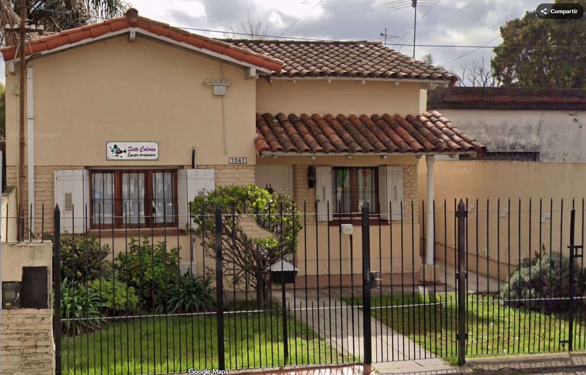
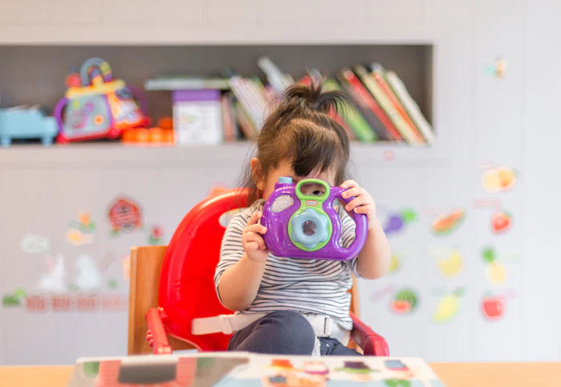

Siete Colores - Equipo Terapéutico
Espacio interdisciplinario dedicado al acompañamiento terapéutico integral para infancias, jóvenes y adultos. Construimos puentes entre la clínica, la familia, la escuela y la comunidad en Burzaco.

Sede Burzaco
Joaquín V. González 1061
Salas Terapéuticas Equipadas
Ambientes seguros pensados para el juego, la regulación sensorial y el trabajo clínico interdisciplinario.
Un abordaje pensado para cada etapa de la vida.
Comprendemos que cada diagnóstico, inquietud o desafío en el desarrollo (trastornos del neurodesarrollo, integración sensorial, dificultades de aprendizaje, lenguaje o bienestar emocional) impacta en toda la dinámica cotidiana. Por eso, nuestro abordaje no es una serie de turnos aislados, sino un plan coordinado que construye autonomía, bienestar y calidad de vida.
Intervenciones personalizadas basadas en objetivos significativos, respetando los tiempos y potencialidades de cada persona.
Coordinación constante con escuelas, maestras de apoyo (DAI / APND), gabinetes escolares y médicos derivantes.
Atención interdisciplinaria adaptada a infancias, jóvenes y adultos.
Evaluación conjunta de funciones ejecutivas, regulación y adaptación social.
Especialidades Terapéuticas
Evaluación, diagnóstico y tratamiento articulado bajo un mismo techo clínico en Burzaco.
Terapia Ocupacional
Promoción de la autonomía en Actividades de la Vida Diaria (alimentación, vestido, higiene), procesamiento e integración sensorial, motricidad fina y coordinación bimanual.
- Dificultades de autorregulación y procesamiento sensorial
- Grafomotricidad, destreza manual y coordinación
- Planificación motriz (dispraxia) y autonomía
Psicopedagogía
Diagnóstico y tratamiento de las dificultades en la lectoescritura, cálculo y razonamiento. Estrategias cognitivas para niños, jóvenes y apoyo en el aprendizaje.
- Baterías diagnósticas y evaluación de funciones ejecutivas
- Adaptaciones curriculares y trabajo con instituciones
- Hábitos de estudio y organización del tiempo
Psicología Clínica
Espacio de escucha y psicoterapia adaptado a la edad evolutiva y necesidades de cada persona (infanto-juvenil y adultos). Abordaje de ansiedades, estado de ánimo, cambios y orientación familiar.
- Psicoterapia individual y psicodiagnóstico
- Regulación emocional, miedos y situaciones de cambio
- Entrevistas de orientación y acompañamiento familiar
Fonoaudiología
Intervención clínica en articulación del habla, retrasos del lenguaje (TEL/TDL), deglución y sistemas de comunicación aumentativa y alternativa (SAAC).
- Pronunciación de fonemas (dislalias) y fluidez verbal
- Deglución atípica y motricidad orofacial
- Comunicación pragmática y lenguaje social
Psicomotricidad
Acompañamiento del esquema corporal, coordinación global, equilibrio y regulación tónica a través de la vivencia corporal y el juego motor espontáneo.
- Torpeza motriz, saltos y equilibrio dinámico
- Estructuración espacial y temporal
- Descarga corporal y límites en el juego

Primera InfanciaEstimulación Temprana
Abordaje en los primeros años cruciales de vida. Detección oportuna de alertas madurativas, seguimiento de recién nacidos prematuros y consolidación del vínculo inicial.
- Hitos motores (sostén cefálico, sedestación, marcha)
- Contacto visual, sonrisa social y balbuceo
- Asesoramiento cálido a mamás, papás y cuidadores
Actividad Física
Programas de movimiento y entrenamiento adaptado para potenciar la fuerza, resistencia, coordinación y hábitos de vida saludables en infancias, jóvenes y adultos.
- Desarrollo de capacidades motoras condicionales y coordinativas
- Circuitos adaptados según posibilidades funcionales individuales
- Regulación tónica, gasto energético y bienestar psicofísico
Habilidades Sociales
Espacios grupales terapéuticos orientados a fortalecer la interacción con pares, la empatía, la resolución de conflictos, la reciprocidad y la comunicación asertiva.
- Iniciación y mantenimiento de conversaciones e interacciones
- Comprensión de claves sociales, turnos y juego cooperativo
- Manejo de la frustración y pertenencia en grupos de pares
Proceso de Admisión Paso a Paso
Sabemos que iniciar un tratamiento puede generar dudas. Te contamos cómo coordinamos el ingreso:
Primer Contacto
Nos escribís por WhatsApp o completás el formulario indicando para quién es la consulta y el motivo o derivación médica.
Entrevista Inicial
Encuentro de admisión para repasar la historia clínica, antecedentes, informes previos e inquietudes cotidianas.
Evaluación y Plan
Sesiones diagnósticas con el paciente y armado del plan de objetivos terapéuticos interdisciplinarios.
Tratamiento & Red
Comienzo de las sesiones, articulación con instituciones escolares o laborales y entrega de documentación para reintegros.
Nuestro Equipo Profesional
Profesionales matriculados con sólida trayectoria clínica, vocación interdisciplinaria y calidez humana.
Lic. Adriana Griselda Rotela
Directora / Terapista Ocupacional
Especialista en Terapia Ocupacional, Integración Sensorial y Neurodesarrollo. Coordinación integral del equipo terapéutico interdisciplinario, orientación a familias y articulación con redes de salud y educación.
Especialistas del Equipo Interdisciplinario
Profesionales articulados en cada área terapéutica:
Lic. Mónica Susana Belottini
Terapista Ocupacional / Estimulación Temprana
Abordaje clínico en infancias y necesidades derivadas de la discapacidad. Formación en Integración Sensorial, modelo Floortime y Recursos de Comunicación Aumentativa Alternativa (CAA).
Lic. Jimena Viviana Delmoral Juárez
Licenciada en Psicología (UBA)
Espacio terapéutico de escucha y psicoterapia clínica adaptado a cada momento evolutivo. Evaluación psicodiagnóstica, regulación emocional, orientación familiar y acompañamiento vincular.
Área de Psicopedagogía
Evaluación y Clínica del Aprendizaje
Diagnóstico y tratamiento de desafíos escolares, estimulación de funciones ejecutivas y articulación con instituciones.
Área de Fonoaudiología
Habla, Lenguaje y Deglución
Intervención temprana en el desarrollo del lenguaje, articulación, deglución y comunicación aumentativa y alternativa.
Área de Psicomotricidad
Neurodesarrollo y Movimiento
Estructuración del esquema corporal, coordinación global, equilibrio y regulación del tono a través de la vivencia lúdica.
Cobertura con C.U.D. y Obras Sociales
Brindamos toda la documentación administrativa y presupuestaria que exige la Ley 24.901 de Prestaciones Básicas en Discapacidad para la tramitación de reintegros en obras sociales y prepagas.
Facturación Oficial
Emitimos factura electrónica mensual con datos del paciente y profesional matriculado (RNP), apta para reintegro en OSDE, Swiss Medical, Galeno, IOMA, OSECAC y demás obras sociales y prepagas.
Planes de Tratamiento
Confeccionamos los planes de trabajo, presupuestos según nomenclador nacional y cronograma de sesiones solicitados por las auditorías médicas.
Informes Periódicos
Elaboramos resúmenes de evolución, objetivos alcanzados y continuidad terapéutica para renovaciones anuales de cobertura y seguimiento clínico.
Solicitá una Entrevista de Admisión
Completá este formulario y se abrirá una conversación de WhatsApp con tus datos ordenados para que te respondamos a la brevedad.
Preguntas Frecuentes
Información clara para antes de tu primera consulta.
Dónde encontrarnos en Burzaco
Un barrio sereno y accesible, a pocas cuadras del centro comercial y de la estación de trenes de Burzaco.